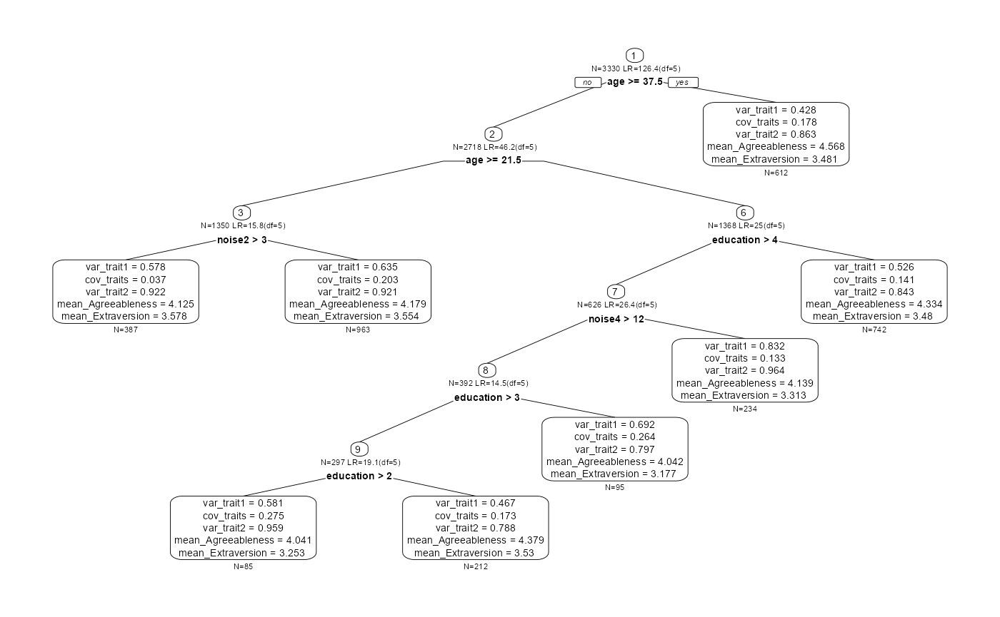
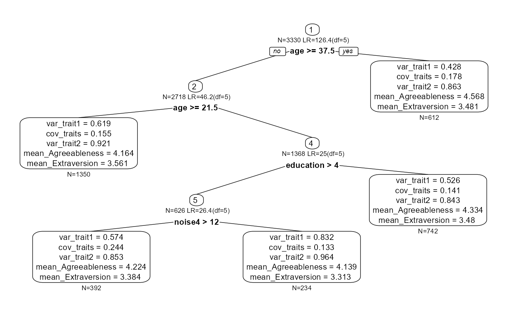

vignettes/spi-semtree.Rmd
spi-semtree.RmdThis vignette demonstrates the application of multiple-testing
corrections in SEM trees. It shows this with a simple SEM tree based on
two personality dimensions from the spi dataset included in
the psychTools package. We will
OpenMx
that captures their variances and covariance,First, we load the necessary packages:
The psychTools::spi data frame contains a large set of
personality items along with demographic variables such as age,
education, and gender. The companion object spi.keys holds
scoring keys that map items to broad personality dimensions. Using
psych::scoreFast(), we can quickly compute scale scores
while handling reverse-keyed items.
data(spi)
data(spi.keys)
# score all available scales and extract two broad dimensions
spi_scored <- scoreFast(keys = spi.keys, items = spi)
selected_traits <- c("Agree-A", "Extra-A")
trait_scores <- spi_scored[, selected_traits, drop = FALSE]
# potential predictors available in the dataset
candidate_covariates <- intersect(c("age", "education", "gender"), names(spi))
spi_analysis <- cbind(trait_scores, spi[, candidate_covariates, drop = FALSE])
spi_analysis <- na.omit(spi_analysis)
selected_traits <- c("Agreeableness", "Extraversion")
names(spi_analysis)[1:2] <- selected_traits
# add some noise
set.seed(104358)
spi_analysis$noise1 <- ordered(sample(c(0,1), nrow(spi_analysis), TRUE))
spi_analysis$noise2 <- ordered(sample(c(1:10), nrow(spi_analysis), TRUE))
spi_analysis$noise3 <- ordered(sample(c(1:10), nrow(spi_analysis), TRUE))
spi_analysis$noise4 <- ordered(sample(c(1:20), nrow(spi_analysis), TRUE))
spi_analysis$education <- ordered(spi_analysis$education)The resulting spi_analysis data frame contains the two
selected personality scales along with any demographic predictors that
are present in the dataset. In addition, we simulate some uninformative
noise predictors.
We now specify a concise bivariate SEM that estimates the means, variances, and covariance of the two personality dimensions.
two_dim_model <- mxModel(
"TwoDimensions",
type = "RAM",
manifestVars = selected_traits,
mxData(spi_analysis[, selected_traits, drop = FALSE], type = "raw"),
# freely estimate the variances and their covariance
mxPath(
from = selected_traits,
arrows = 2,
connect = "unique.pairs",
free = TRUE,
values = c(1, 0.2, 1),
labels = c("var_trait1", "cov_traits", "var_trait2")
),
# estimate manifest means
mxPath(
from = "one",
to = selected_traits,
arrows = 1,
free = TRUE,
values = 0,
labels = paste0("mean_", selected_traits)
)
)
two_dim_fit <- mxRun(two_dim_model)
#> Running TwoDimensions with 5 parametersWith the fitted model in place, we can grow a SEM tree to search for
subgroups that differ in their personality means and covariance
structure. Any columns in spi_analysis not used as manifest
variables automatically serve as candidate splitting variables.
spi_tree <- semtree(
model = two_dim_fit,
data = spi_analysis,
control = semtree_control(method="score")
)The resulting tree captures how demographic variables partition the sample into groups with distinct estimates for the two personality dimensions.
To adjust for the inflated Type I error rate that arises from testing multiple candidate split variables, enable the Bonferroni correction in the control settings. This reduces the per-test significance threshold.
bonf_ctrl <- semtree.control(bonferroni = TRUE,
alpha = 0.05,
method = "score")
spi_tree_bonf <- semtree(
model = two_dim_fit,
data = spi_analysis,
control = bonf_ctrl
)You can compare the Bonferroni-corrected tree to the uncorrected version to see how stricter multiplicity control affects the discovered subgroups.
plot(spi_tree)
plot(spi_tree_bonf)
The Bonferroni-adjusted tree will typically be smaller or include fewer splits because candidate partitions must meet the more conservative significance threshold.